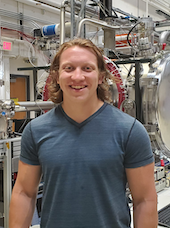

CONFERENCE ORGANIZERS
The Organizing Committee is comprised of grad students from a variety of institutions and areas of research.
Email the conference organizers.
-
Rebecca Mikula (she/her)
University of Colorado
Becca is a graduate student at the University of Colorado Boulder in the Aerospace Engineering department. Her work focuses on the calibration and analysis of impact ionization mass spectrometer data for organic and inorganic compounds.
-
Ethan Ayari (he/him)
University of Colorado
Ethan is a first year graduate student in Physics working with Mihály Horányi and Zoltan Sternovsky on designing and analyzing data from the Interstellar Dust Experiment (IDEX) instrument aboard NASA's Interstellar Mapping and Acceleration Probe (IMAP) mission.

-
Alexander Doner (he/him)
University of Colorado
Alex is a first year graduate student in the Department of Physics working with Mihály Horányi on the Interstellar Dust Experiment (IDEX) instrument aboard NASA's Interstellar Mapping and Acceleration Probe (IMAP) mission.
 -
Aaron Kessler (he/him)
Aaron Kessler is a software engineer contributing towards The LunGradCon website. For any questions regarding the LunGradCon website contact him ataaronkessler98@gmail.com.
-
Lorraine Rosello Del Valle (she/her)
University of Central Florida/p>
Lorraine is a first year Planetary Science PhD student at the University of Central Florida. Her research interests include space weathering processes on carbonaceous and icy bodies

-
Autumn Schackelford (she/they)
University of Central Florida
Autumn is a third-year planetary sciences graduate student at the University of Central Florida. Autumn's work focuses on understanding the surface properties and regolith alteration processes of airless bodies, namely the Moon and Mercury.